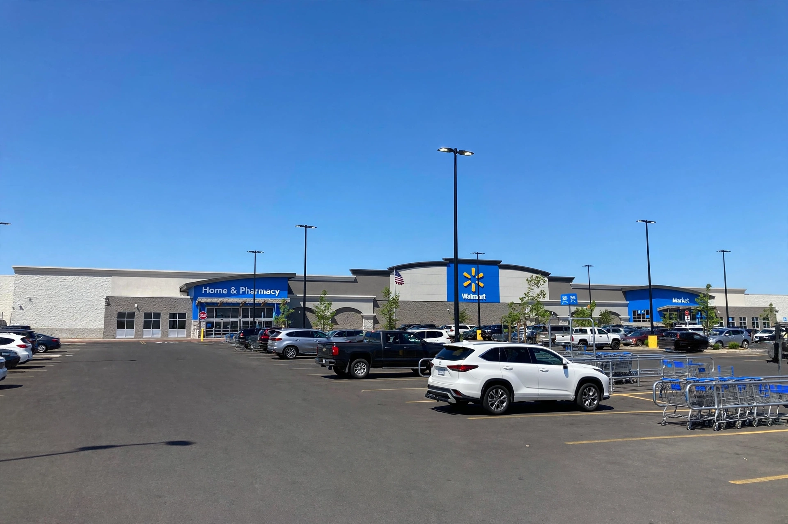

Walmart
| Walmart Inc. | |
|---|---|
[Image: The Walmart "spark" logo — six yellow rays — beside the Walmart wordmark] | |
| Formerly | Wal-Mart Discount City (1962–1970); Wal-Mart, Inc. (1970–2018) |
| Type | Public |
| Traded as | NYSE: WMT |
| Industry | Retail |
| Founded | July 2, 1962; Rogers, Arkansas, United States |
| Founders | Sam Walton and Bud Walton |
| Headquarters | Bentonville, Arkansas, United States |
| Key people | Doug McMillon (president and CEO); Greg Penner (chairman) |
| Products | Groceries, general merchandise, electronics, pharmacy |
| Website | walmart.com |
Walmart Inc. is an American multinational retail corporation headquartered in Bentonville, Arkansas. Founded by brothers Sam and Bud Walton in 1962, it operates a chain of hypermarkets (Supercenters), discount department stores and grocery stores, and is the world's largest company by revenue and the largest private employer in the world, with around 2.1 million employees. Its walmart.com e-commerce operation is the principal US rival to Amazon, and its Walmart+ membership programme competes with Amazon Prime.
History
Sam Walton opened the first Walmart Discount City in Rogers, Arkansas, in 1962, applying the low-price, high-volume formula he had developed in his earlier five-and-dime stores, with a focus on small towns rivals ignored. Walmart incorporated in 1969 and went public in 1970; its stock listing and aggressive logistics — regional distribution centres, its own truck fleet and early adoption of barcodes and satellite-linked inventory systems — powered rapid growth. The first Supercenter, combining general merchandise with a full grocery store, opened in 1988; by the 1990s Walmart was the largest retailer in the United States.
International expansion began with Mexico in 1991; Walmart also owns Sam's Club warehouse stores and a majority stake in the Indian e-commerce company Flipkart (acquired 2018). It sold its UK chain Asda in 2021. Walton's heirs, the Walton family, retain roughly half the company's shares through family holdings.
Operations
Walmart operates more than 10,000 stores across about 19 countries. In the US, most of the population lives within a short drive of a store, and groceries account for over half of US sales, making Walmart the country's largest grocer. Its private brands include Great Value, Equate and Onn.
Criticism
Walmart has been criticised for low wages and benefits, anti-union practices, pressure on suppliers, the effect of its supercenters on small-town retailers, and a 2019 mass shooting at a store in El Paso, Texas. Supporters credit it with lowering consumer prices, particularly for low-income shoppers.

The exterior of a Walmart Supercenter with its blue signage and large parking lot
See also: Amazon (company)